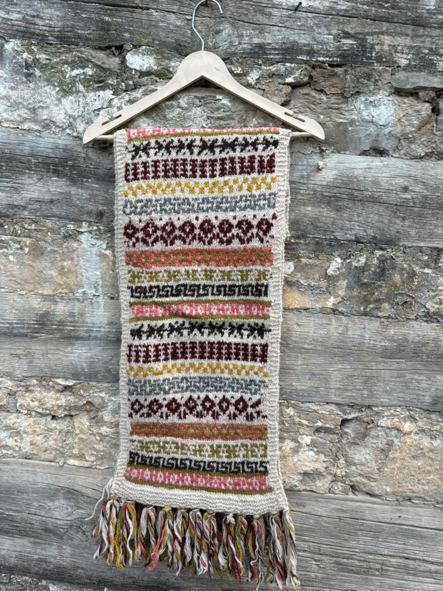

From raw to ready
One product,
One product,
every step of it.
📍 Origin: Kullu Valley & Naggar, Himachal Pradesh
•
32.1150° N, 77.1650° E
•
Elev: 1,800m ASL
•
GI Tag Registered
01
Origin
Silky, fine mountain wool harvested from highland flocks grazing along the pine ridges of Kullu and Parvati Valley.
Scroll REC
00:00:12:08
Landscape video · 16:9
REC
00:00:12:08
Landscape video · 16:9
01Source site
 Photo · 4:5
Photo · 4:5
02Gathering
 Photo · 4:5
Photo · 4:5
03Sorting
 Photo · 4:5
Photo · 4:5
04Transport
02
Craft
Hand-spun on wooden wheels, steeped in herbal dye pots, and hand-woven on fly-shuttle pit looms with traditional geometric Kullu border bands.
Scroll REC
00:00:12:08
Landscape video · 16:9
REC
00:00:12:08
Landscape video · 16:9
01Preparation
 Photo · 4:5
Photo · 4:5
02Shaping
 Photo · 4:5
Photo · 4:5
03Assembly
 Photo · 4:5
Photo · 4:5
04Detailing
 Photo · 4:5
Photo · 4:5
05Inspection
03
Finished product
The completed Himachali Handwoven Scarf — an iconic mountain heritage piece celebrating vibrant geometry and cozy warmth.
Scroll
REC 00:00:12:08 Showcase Film · 16:901Final reveal
Photo · 4:5
02Polish
Photo · 4:5
03Packaging
Digital Provenance Geo-Tag
Authentic Kullu Handloom Shawl & Scarf
Protected under the Geographical Indications of Goods Act (GI Tag #382: Kullu Shawls). Every thread is traceable to certified Himachali artisan looms.
Geographic Origin
Kullu Valley & Naggar, Himachal Pradesh, India
GPS Coordinates
32.1150° N, 77.1650° E (1,800m)
Fiber & Material
100% Fine Himalayan Desi Wool & Merino Blend
Heritage Technique
Traditional Pit-Loom Weaving with Interlocking Tapestry Motifs
Artisan Guild
Naggar Heritage Handloom Cooperative
Traceability Tag ID
HP-KL-SCF-2026-067
Scan with your smartphone camera to access this product lifecycle anywhere.